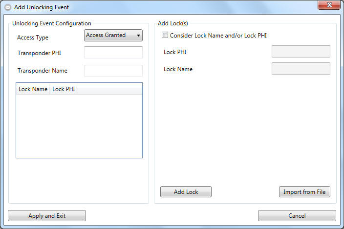

Create Events - Unlocking Events

In order to trigger an unlocking event, the EventMessenger software needs the
name and serial number informations from the set of transponder and added lock(s) pairs
that has fired the unlocking event along with the desired type of result (access
granted, access denied or both).
The check will always be performed per each transponder. With that said, one
will always add one transponder with its name and/or serial number (phi) and one
or more locks added to it.
Please follow these steps to create such setup:
- Please start by adding one lock.
- Check the "consider lock name and/or phi" option if you do not want
to be informed about every lock in the locking system but one or more
specific one(s).
- Define a name and phi for each lock you would like to add.
HINT:
- your input is treated as case insensitive and as a part of a whole
search phrase
Example:
If you have entered "entrance" as the name of the lock all of the
following locknames will return a positive match:
"main entrance"; "Entrance North"
- Click on "Add" to add the lock with its name and phi (if defined
any).
- Continue to add locks as needed.
- Define the name of the transponder owner and the phi of his/her transponder.
See hint under 1.2 about how the check is performed.
Keep in mind, that you could add more than one transponder at once by
seperating the search phrases with a semicolon.
Example:
If
you would like to check for Mrs. little and Mr. GIANT you could enter
"little; giant" as search phrase wich will return the desired result.
Please be aware to specify the phi among the transpondername in order to
prevent false-positive results when more than one "little" - phrase exists
in the locking system.
- Selecting the "Access Type" could be used to only trigger if the
transponder button press resulted in an "access granted" or "access denied".
Surely you could select "Trigger Both" if wanted.
- "Apply and Exit" will add the set of transponder and attached locks and
finish the unlocking event configuration for one transponder.